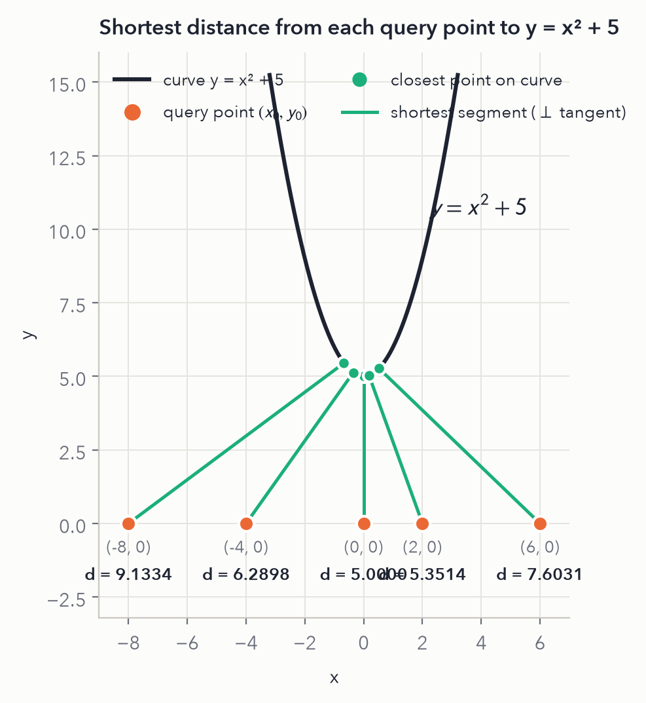
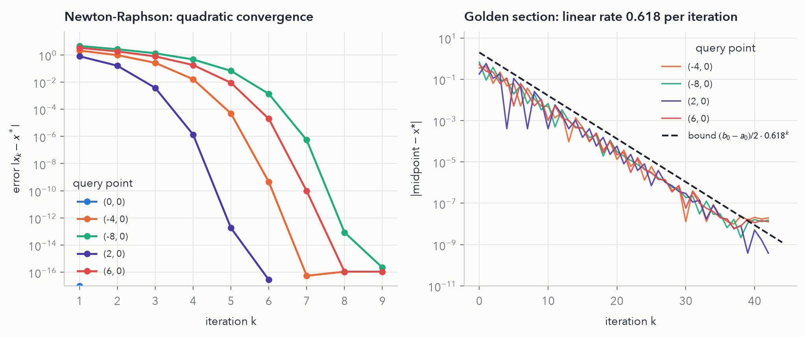
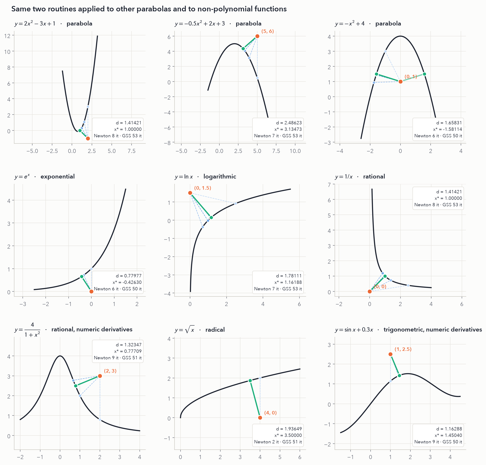
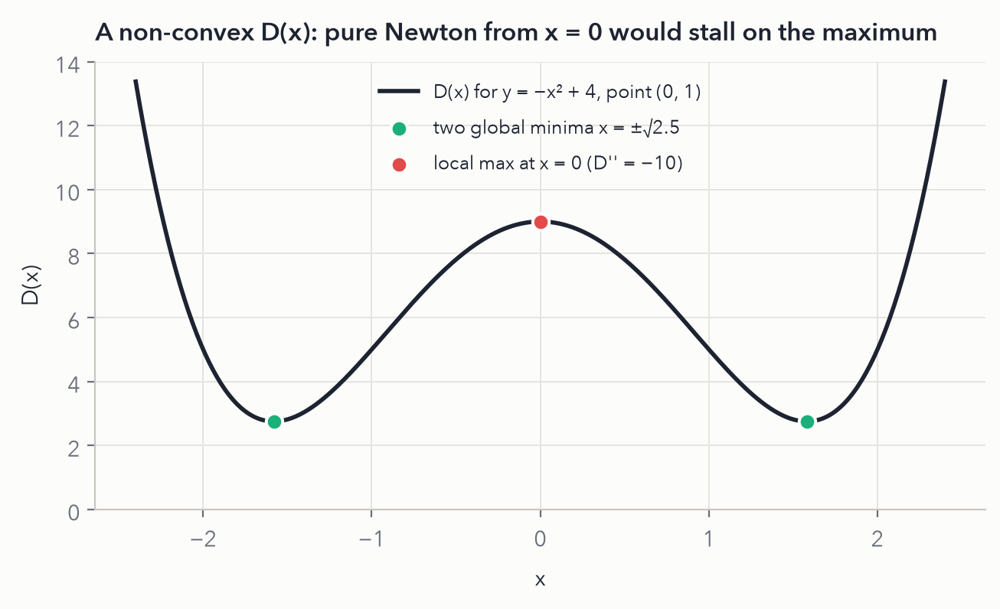
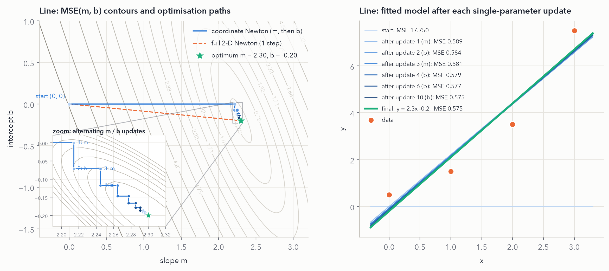
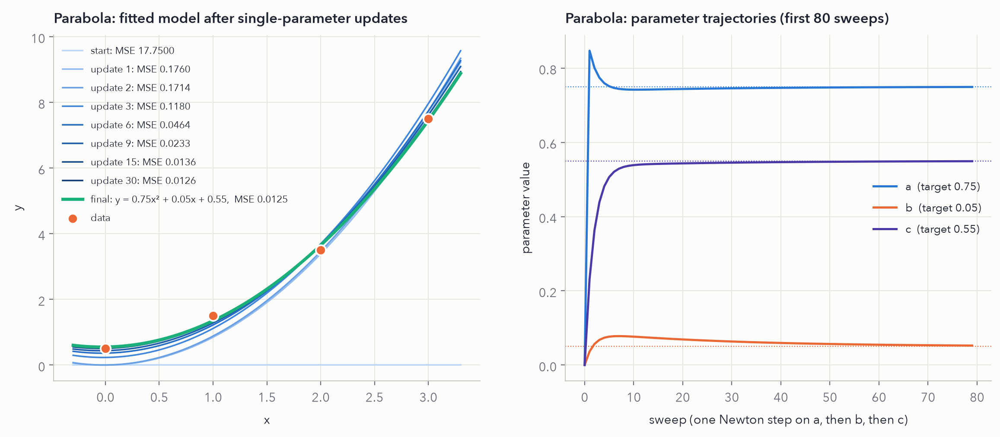
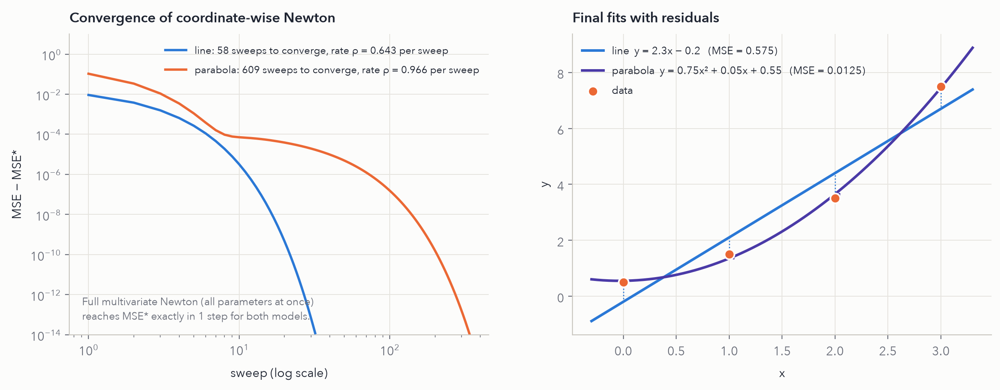

Shortest distance from a point to a function
Find the point on \(y = f(x)\) closest to a query point \((x_0, y_0)\). The main case is \(f(x) = x^2 + 5\) with the query points \((0,0), (-4,0), (-8,0), (2,0), (6,0)\).
1.1The objective function
The distance from \((x_0,y_0)\) to a curve point \((x, f(x))\) is \(d(x) = \sqrt{(x-x_0)^2 + (f(x)-y_0)^2}\). The square root is monotonic, so it is enough to minimise the squared distance:
\[ D(x) = (x - x_0)^2 + \big(f(x) - y_0\big)^2 \]
\[ \begin{aligned} D'(x) &= 2(x - x_0) + 2\big(f(x) - y_0\big) f'(x) \\ D''(x) &= 2 + 2f'(x)^2 + 2\big(f(x)-y_0\big) f''(x) \end{aligned} \]
1.2Analytical solution for \(y = x^2 + 5\)
All five query points have \(y_0 = 0\). With \(f(x) = x^2+5\) and \(f'(x) = 2x\):
\[ \tfrac12 D'(x) = (x - x_0) + (x^2 + 5)(2x) = 2x^3 + 11x - x_0 \;\equiv\; g(x). \]
Setting \(g(x)=0\) gives a cubic. Because \(g'(x) = 6x^2 + 11 > 0\) for every \(x\), \(g\) is strictly increasing and has exactly one real root. Also \(D''(x) = 12x^2 + 22 > 0\), so \(D\) is strictly convex and this root is the global minimum. Dividing by 2 gives the depressed cubic
\[ x^3 + p\,x + q = 0, \qquad p = \tfrac{11}{2}, \quad q = -\tfrac{x_0}{2}, \]
whose discriminant \(\tfrac{q^2}{4} + \tfrac{p^3}{27} > 0\) is positive. Cardano's formula therefore gives the single real root in closed form:
\[ x^* = \sqrt[3]{\tfrac{x_0}{4} + s} + \sqrt[3]{\tfrac{x_0}{4} - s}, \qquad s = \sqrt{\tfrac{x_0^2}{16} + \left(\tfrac{11}{6}\right)^3} \]
\[ d^* = \sqrt{(x^*-x_0)^2 + (x^{*2}+5)^2}. \]
Worked example: point (−4, 0)
\[ s = \sqrt{\tfrac{16}{16} + \tfrac{1331}{216}} = \sqrt{1 + 6.162037} = 2.676198 \]
\[ \begin{aligned} x^* &= \sqrt[3]{-1 + 2.676198} + \sqrt[3]{-1 - 2.676198} = \sqrt[3]{1.676198} + \sqrt[3]{-3.676198} \\ &= 1.187989 - 1.543459 = -0.355470 \end{aligned} \]
\[ \begin{aligned} y^* &= (-0.355470)^2 + 5 = 5.126359 \\ d^* &= \sqrt{(3.644530)^2 + (5.126359)^2} = \sqrt{39.562152} = \mathbf{6.289845} \end{aligned} \]
Check: \(g(x^*) = 2(-0.355470)^3 + 11(-0.355470) + 4 = -0.089834 - 3.910170 + 4 \approx 0\). ✓
Point (0, 0) needs no formula: \(g(x) = x(2x^2+11) = 0\) gives \(x^* = 0\), so the closest point is the vertex \((0, 5)\) and \(d^* = 5\).
All five points
| point | s | u = x₀/4 + s | v = x₀/4 − s | ∛u | ∛v | x* | y* = x*² + 5 | d* | orthogonality residual |
|---|---|---|---|---|---|---|---|---|---|
| (0, 0) | 2.482345 | 2.482345 | −2.482345 | 1.354006 | −1.354006 | 0.000000 | 5.000000 | 5.000000 | 0.0e+00 |
| (−4, 0) | 2.676198 | 1.676198 | −3.676198 | 1.187887 | −1.543357 | −0.355470 | 5.126359 | 6.289845 | 1.3e−15 |
| (−8, 0) | 3.187795 | 1.187795 | −5.187795 | 1.059044 | −1.731122 | −0.672078 | 5.451689 | 9.133420 | 8.9e−16 |
| (2, 0) | 2.532200 | 3.032200 | −2.032200 | 1.447391 | −1.266647 | 0.180745 | 5.032669 | 5.351396 | 4.4e−16 |
| (6, 0) | 2.900351 | 4.400351 | −1.400351 | 1.638686 | −1.118782 | 0.519904 | 5.270300 | 7.603125 | 8.9e−16 |
The last column is \((x^*-x_0) + (f(x^*)-y_0)f'(x^*)\), the dot product of the shortest segment with the tangent. It is zero to machine precision, which confirms the right angle.
1.3Numerical methods
A · Newton-Raphson
Solve \(D'(x) = 0\) by linearising \(D'\) at the current iterate:
\[ x_{k+1} = x_k - \frac{D'(x_k)}{D''(x_k)} \]
For the assignment parabola this is \(x_{k+1} = x_k - \dfrac{2x_k^3 + 11x_k - x_0}{6x_k^2 + 11}\). It needs \(f, f', f''\). Convergence is quadratic: the number of correct digits roughly doubles each step once the iterate is close. Each run starts at \(x = x_0\), the query point's own \(x\).
B · Golden-section search
Derivative-free. Keep a bracket \([a,b]\) and two interior points
\[ x_1 = a + 0.382(b-a), \quad x_2 = b - 0.382(b-a). \]
If \(D(x_1) < D(x_2)\) the minimum is in \([a, x_2]\), otherwise it is in \([x_1, b]\). Because of the golden ratio, one old interior point is reused, so each step costs one evaluation of \(D\) and shrinks the bracket by \(1/\varphi \approx 0.618\) (linear convergence).
Bracket. Since \(g\) is increasing, \(g(0) = -x_0\), and \(g(x_0/11) = 2(x_0/11)^3\) has the sign of \(x_0\), the root satisfies \(|x^*| \le |x_0|/11 < 1\). The bracket \([-2, 2]\) therefore contains the minimiser for every point.
1.4Worked iterations for all five points
Each panel lists every Newton step and the first eight golden-section steps plus the final one. Each row applies the update formula once, which is the hand calculation written out. \(g = D'/2\) and \(g' = D''/2\); the factor of 2 cancels in the Newton ratio. On the webpage, click a point to expand its tables.
(0, 0) Newton converges in 1 iteration · golden section in 42 · d* = 5.000000
Newton-Raphson, starting at x₀ = 0
\[x_{k+1} = x_k - \frac{2x_k^3 + 11x_k - (0)}{6x_k^2 + 11}\]
| k | xk | g(xk) = 2xk³ + 11xk − x₀ | g′(xk) = 6xk² + 11 | xk+1 = xk − g/g′ | |Δx| |
|---|---|---|---|---|---|
| 0 | 0.00000000 | 0.000000 | 11.000000 | 0.00000000 | < 1e−12 |
Golden-section search on [−2, 2]
| k | a | b | x₁ = a + 0.382(b−a) | x₂ = b − 0.382(b−a) | D(x₁) | D(x₂) | keep |
|---|---|---|---|---|---|---|---|
| 0 | −2.000000 | 2.000000 | −0.472136 | 0.472136 | 27.50173 | 27.50173 | [x₁, b] |
| 1 | −0.472136 | 2.000000 | 0.472136 | 1.055728 | 27.50173 | 38.50243 | [a, x₂] |
| 2 | −0.472136 | 1.055728 | 0.111456 | 0.472136 | 25.13680 | 27.50173 | [a, x₂] |
| 3 | −0.472136 | 0.472136 | −0.111456 | 0.111456 | 25.13680 | 25.13680 | [x₁, b] |
| 4 | −0.111456 | 0.472136 | 0.111456 | 0.249224 | 25.13680 | 25.68709 | [a, x₂] |
| 5 | −0.111456 | 0.249224 | 0.026311 | 0.111456 | 25.00762 | 25.13680 | [a, x₂] |
| 6 | −0.111456 | 0.111456 | −0.026311 | 0.026311 | 25.00762 | 25.00762 | [x₁, b] |
| 7 | −0.026311 | 0.111456 | 0.026311 | 0.058834 | 25.00762 | 25.03809 | [a, x₂] |
| ⋮ | ⋮ | ⋮ | ⋮ | ⋮ | ⋮ | ⋮ | ⋮ |
| 42 | 0.000000 | 0.000000 | 0.000000 | 0.000000 | 25.00000 | 25.00000 | stop |
After 42 iterations the bracket width is below 10⁻⁸, so x* ≈ (a + b)/2 = 0.00000002 and d* = √D(x*) = 5.00000000.
(−4, 0) Newton converges in 8 iterations · golden section in 42 · d* = 6.289845
Newton-Raphson, starting at x₀ = -4
\[x_{k+1} = x_k - \frac{2x_k^3 + 11x_k - (-4)}{6x_k^2 + 11}\]
| k | xk | g(xk) = 2xk³ + 11xk − x₀ | g′(xk) = 6xk² + 11 | xk+1 = xk − g/g′ | |Δx| |
|---|---|---|---|---|---|
| 0 | −4.00000000 | −168.000000 | 107.000000 | −2.42990654 | 1.57e+00 |
| 1 | −2.42990654 | −51.423475 | 46.426675 | −1.32227876 | 1.11e+00 |
| 2 | −1.32227876 | −15.168867 | 21.490527 | −0.61643908 | 7.06e-01 |
| 3 | −0.61643908 | −3.249320 | 13.279983 | −0.37176105 | 2.45e-01 |
| 4 | −0.37176105 | −0.192131 | 11.829238 | −0.35551901 | 1.62e-02 |
| 5 | −0.35551901 | −0.000580 | 11.758363 | −0.35546969 | 4.93e-05 |
| 6 | −0.35546969 | 0.000000 | 11.758152 | −0.35546969 | 4.41e-10 |
| 7 | −0.35546969 | 0.000000 | 11.758152 | −0.35546969 | < 1e−12 |
Golden-section search on [−2, 2]
| k | a | b | x₁ = a + 0.382(b−a) | x₂ = b − 0.382(b−a) | D(x₁) | D(x₂) | keep |
|---|---|---|---|---|---|---|---|
| 0 | −2.000000 | 2.000000 | −0.472136 | 0.472136 | 39.72464 | 47.27881 | [a, x₂] |
| 1 | −2.000000 | 0.472136 | −1.055728 | −0.472136 | 46.05660 | 39.72464 | [x₁, b] |
| 2 | −1.055728 | 0.472136 | −0.472136 | −0.111456 | 39.72464 | 40.24515 | [a, x₂] |
| 3 | −1.055728 | −0.111456 | −0.695048 | −0.472136 | 40.98701 | 39.72464 | [x₁, b] |
| 4 | −0.695048 | −0.111456 | −0.472136 | −0.334369 | 39.72464 | 39.56738 | [x₁, b] |
| 5 | −0.472136 | −0.111456 | −0.334369 | −0.249224 | 39.56738 | 39.69331 | [a, x₂] |
| 6 | −0.472136 | −0.249224 | −0.386991 | −0.334369 | 39.57388 | 39.56738 | [x₁, b] |
| 7 | −0.386991 | −0.249224 | −0.334369 | −0.301846 | 39.56738 | 39.59575 | [a, x₂] |
| ⋮ | ⋮ | ⋮ | ⋮ | ⋮ | ⋮ | ⋮ | ⋮ |
| 42 | −0.355470 | −0.355470 | −0.355470 | −0.355470 | 39.56215 | 39.56215 | stop |
After 42 iterations the bracket width is below 10⁻⁸, so x* ≈ (a + b)/2 = −0.35546967 and d* = √D(x*) = 6.28984536.
(−8, 0) Newton converges in 9 iterations · golden section in 42 · d* = 9.133420
Newton-Raphson, starting at x₀ = -8
\[x_{k+1} = x_k - \frac{2x_k^3 + 11x_k - (-8)}{6x_k^2 + 11}\]
| k | xk | g(xk) = 2xk³ + 11xk − x₀ | g′(xk) = 6xk² + 11 | xk+1 = xk − g/g′ | |Δx| |
|---|---|---|---|---|---|
| 0 | −8.00000000 | −1104.000000 | 395.000000 | −5.20506329 | 2.79e+00 |
| 1 | −5.20506329 | −331.293965 | 173.556103 | −3.29620524 | 1.91e+00 |
| 2 | −3.29620524 | −99.884593 | 76.189814 | −1.98520856 | 1.31e+00 |
| 3 | −1.98520856 | −29.484919 | 34.646318 | −1.13418253 | 8.51e-01 |
| 4 | −1.13418253 | −7.393965 | 18.718220 | −0.73916823 | 3.95e-01 |
| 5 | −0.73916823 | −0.938569 | 14.278218 | −0.67343393 | 6.57e-02 |
| 6 | −0.67343393 | −0.018596 | 13.721080 | −0.67207867 | 1.36e-03 |
| 7 | −0.67207867 | −0.000007 | 13.710138 | −0.67207813 | 5.41e-07 |
| 8 | −0.67207813 | 0.000000 | 13.710134 | −0.67207813 | < 1e−12 |
Golden-section search on [−2, 2]
| k | a | b | x₁ = a + 0.382(b−a) | x₂ = b − 0.382(b−a) | D(x₁) | D(x₂) | keep |
|---|---|---|---|---|---|---|---|
| 0 | −2.000000 | 2.000000 | −0.472136 | 0.472136 | 83.94755 | 99.05590 | [a, x₂] |
| 1 | −2.000000 | 0.472136 | −1.055728 | −0.472136 | 85.61078 | 83.94755 | [x₁, b] |
| 2 | −1.055728 | 0.472136 | −0.472136 | −0.111456 | 83.94755 | 87.35350 | [a, x₂] |
| 3 | −1.055728 | −0.111456 | −0.695048 | −0.472136 | 83.42662 | 83.94755 | [a, x₂] |
| 4 | −1.055728 | −0.472136 | −0.832816 | −0.695048 | 83.78541 | 83.42662 | [x₁, b] |
| 5 | −0.832816 | −0.472136 | −0.695048 | −0.609903 | 83.42662 | 83.47172 | [a, x₂] |
| 6 | −0.832816 | −0.609903 | −0.747671 | −0.695048 | 83.49889 | 83.42662 | [x₁, b] |
| 7 | −0.747671 | −0.609903 | −0.695048 | −0.662526 | 83.42662 | 83.42060 | [x₁, b] |
| ⋮ | ⋮ | ⋮ | ⋮ | ⋮ | ⋮ | ⋮ | ⋮ |
| 42 | −0.672078 | −0.672078 | −0.672078 | −0.672078 | 83.41935 | 83.41935 | stop |
After 42 iterations the bracket width is below 10⁻⁸, so x* ≈ (a + b)/2 = −0.67207811 and d* = √D(x*) = 9.13341951.
(2, 0) Newton converges in 6 iterations · golden section in 42 · d* = 5.351396
Newton-Raphson, starting at x₀ = 2
\[x_{k+1} = x_k - \frac{2x_k^3 + 11x_k - (2)}{6x_k^2 + 11}\]
| k | xk | g(xk) = 2xk³ + 11xk − x₀ | g′(xk) = 6xk² + 11 | xk+1 = xk − g/g′ | |Δx| |
|---|---|---|---|---|---|
| 0 | 2.00000000 | 36.000000 | 35.000000 | 0.97142857 | 1.03e+00 |
| 1 | 0.97142857 | 10.519137 | 16.662041 | 0.34010513 | 6.31e-01 |
| 2 | 0.34010513 | 1.819837 | 11.694029 | 0.18448405 | 1.56e-01 |
| 3 | 0.18448405 | 0.041882 | 11.204206 | 0.18074598 | 3.74e-03 |
| 4 | 0.18074598 | 0.000015 | 11.196015 | 0.18074460 | 1.37e-06 |
| 5 | 0.18074460 | 0.000000 | 11.196012 | 0.18074460 | < 1e−12 |
Golden-section search on [−2, 2]
| k | a | b | x₁ = a + 0.382(b−a) | x₂ = b − 0.382(b−a) | D(x₁) | D(x₂) | keep |
|---|---|---|---|---|---|---|---|
| 0 | −2.000000 | 2.000000 | −0.472136 | 0.472136 | 33.39027 | 29.61318 | [x₁, b] |
| 1 | −0.472136 | 2.000000 | 0.472136 | 1.055728 | 29.61318 | 38.27952 | [a, x₂] |
| 2 | −0.472136 | 1.055728 | 0.111456 | 0.472136 | 28.69098 | 29.61318 | [a, x₂] |
| 3 | −0.472136 | 0.472136 | −0.111456 | 0.111456 | 29.58263 | 28.69098 | [x₁, b] |
| 4 | −0.111456 | 0.472136 | 0.111456 | 0.249224 | 28.69098 | 28.69020 | [x₁, b] |
| 5 | 0.111456 | 0.472136 | 0.249224 | 0.334369 | 28.69020 | 28.90485 | [a, x₂] |
| 6 | 0.111456 | 0.334369 | 0.196601 | 0.249224 | 28.64026 | 28.69020 | [a, x₂] |
| 7 | 0.111456 | 0.249224 | 0.164079 | 0.196601 | 28.64055 | 28.64026 | [x₁, b] |
| ⋮ | ⋮ | ⋮ | ⋮ | ⋮ | ⋮ | ⋮ | ⋮ |
| 42 | 0.180745 | 0.180745 | 0.180745 | 0.180745 | 28.63744 | 28.63744 | stop |
After 42 iterations the bracket width is below 10⁻⁸, so x* ≈ (a + b)/2 = 0.18074460 and d* = √D(x*) = 5.35139641.
(6, 0) Newton converges in 9 iterations · golden section in 42 · d* = 7.603125
Newton-Raphson, starting at x₀ = 6
\[x_{k+1} = x_k - \frac{2x_k^3 + 11x_k - (6)}{6x_k^2 + 11}\]
| k | xk | g(xk) = 2xk³ + 11xk − x₀ | g′(xk) = 6xk² + 11 | xk+1 = xk − g/g′ | |Δx| |
|---|---|---|---|---|---|
| 0 | 6.00000000 | 492.000000 | 227.000000 | 3.83259912 | 2.17e+00 |
| 1 | 3.83259912 | 148.751277 | 99.132896 | 2.33207525 | 1.50e+00 |
| 2 | 2.33207525 | 45.019160 | 43.631450 | 1.30026998 | 1.03e+00 |
| 3 | 1.30026998 | 12.699708 | 21.144212 | 0.69964661 | 6.01e-01 |
| 4 | 0.69964661 | 2.381074 | 13.937032 | 0.52880147 | 1.71e-01 |
| 5 | 0.52880147 | 0.112555 | 12.677786 | 0.51992336 | 8.88e-03 |
| 6 | 0.51992336 | 0.000249 | 12.621922 | 0.51990366 | 1.97e-05 |
| 7 | 0.51990366 | 0.000000 | 12.621799 | 0.51990366 | 9.59e-11 |
| 8 | 0.51990366 | 0.000000 | 12.621799 | 0.51990366 | < 1e−12 |
Golden-section search on [−2, 2]
| k | a | b | x₁ = a + 0.382(b−a) | x₂ = b − 0.382(b−a) | D(x₁) | D(x₂) | keep |
|---|---|---|---|---|---|---|---|
| 0 | −2.000000 | 2.000000 | −0.472136 | 0.472136 | 69.16736 | 57.83609 | [x₁, b] |
| 1 | −0.472136 | 2.000000 | 0.472136 | 1.055728 | 57.83609 | 61.83369 | [a, x₂] |
| 2 | −0.472136 | 1.055728 | 0.111456 | 0.472136 | 59.79933 | 57.83609 | [x₁, b] |
| 3 | 0.111456 | 1.055728 | 0.472136 | 0.695048 | 57.83609 | 58.20681 | [a, x₂] |
| 4 | 0.111456 | 0.695048 | 0.334369 | 0.472136 | 58.22990 | 57.83609 | [x₁, b] |
| 5 | 0.334369 | 0.695048 | 0.472136 | 0.557281 | 57.83609 | 57.82526 | [x₁, b] |
| 6 | 0.472136 | 0.695048 | 0.557281 | 0.609903 | 57.82526 | 57.91133 | [a, x₂] |
| 7 | 0.472136 | 0.609903 | 0.524758 | 0.557281 | 57.80781 | 57.82526 | [a, x₂] |
| ⋮ | ⋮ | ⋮ | ⋮ | ⋮ | ⋮ | ⋮ | ⋮ |
| 42 | 0.519904 | 0.519904 | 0.519904 | 0.519904 | 57.80752 | 57.80752 | stop |
After 42 iterations the bracket width is below 10⁻⁸, so x* ≈ (a + b)/2 = 0.51990367 and d* = √D(x*) = 7.60312541.
1.5Results and plots
| point | x* analytic | d* analytic | x* Newton | d* Newton | iter. | x* golden | d* golden | iter. |
|---|---|---|---|---|---|---|---|---|
| (0, 0) | 0.00000000 | 5.00000000 | 0.00000000 | 5.00000000 | 1 | 0.00000002 | 5.00000000 | 42 |
| (−4, 0) | −0.35546969 | 6.28984536 | −0.35546969 | 6.28984536 | 8 | −0.35546967 | 6.28984536 | 42 |
| (−8, 0) | −0.67207813 | 9.13341951 | −0.67207813 | 9.13341951 | 9 | −0.67207811 | 9.13341951 | 42 |
| (2, 0) | 0.18074460 | 5.35139641 | 0.18074460 | 5.35139641 | 6 | 0.18074460 | 5.35139641 | 42 |
| (6, 0) | 0.51990366 | 7.60312541 | 0.51990366 | 7.60312541 | 9 | 0.51990367 | 7.60312541 | 42 |





1.6Python code
The module works for any point and any parabola \(y = ax^2 + bx + c\) through make_parabola(a, b, c).
It also works for any other function when you pass f (and optionally df, ddf).
Both solvers return their full iteration history, and that history drives the tables and figures above.
📄 distance.py — Newton-Raphson, golden-section search, Cardano closed form
"""
SYDE 572 - Assignment 1, Part 1
Shortest distance from a point (x0, y0) to a curve y = f(x).
Two numerical methods are implemented, both minimising the squared distance
D(x) = (x - x0)^2 + (f(x) - y0)^2
* Newton-Raphson on D'(x) = 0 (needs f, f', f'')
* Golden-section search on D(x) (needs only f and a bracket [a, b])
Every routine returns the full iteration history so the intermediate steps
can be tabulated and plotted.
"""
import math
PHI = (1 + math.sqrt(5)) / 2
RESPHI = 2 - PHI # = 1/phi^2 ~ 0.381966
# ----------------------------------------------------------------------------
# Objective and its derivatives
# ----------------------------------------------------------------------------
def dist_sq(x, x0, y0, f):
"""Squared distance D(x) between (x0, y0) and the curve point (x, f(x))."""
return (x - x0) ** 2 + (f(x) - y0) ** 2
def dist_sq_d1(x, x0, y0, f, df):
"""D'(x) = 2(x - x0) + 2(f(x) - y0) f'(x)."""
return 2 * (x - x0) + 2 * (f(x) - y0) * df(x)
def dist_sq_d2(x, x0, y0, f, df, ddf):
"""D''(x) = 2 + 2 f'(x)^2 + 2(f(x) - y0) f''(x)."""
return 2 + 2 * df(x) ** 2 + 2 * (f(x) - y0) * ddf(x)
# ----------------------------------------------------------------------------
# Function builders
# ----------------------------------------------------------------------------
def make_parabola(a, b, c):
"""Return f, f', f'' for the parabola y = a x^2 + b x + c."""
f = lambda x: a * x * x + b * x + c
df = lambda x: 2 * a * x + b
ddf = lambda x: 2 * a
return f, df, ddf
def numeric_derivatives(f, h=1e-5):
"""Central-difference f' and f'' for when the derivatives are not known
in closed form (the 'slight modification' that lets Newton handle any f)."""
df = lambda x: (f(x + h) - f(x - h)) / (2 * h)
ddf = lambda x: (f(x + h) - 2 * f(x) + f(x - h)) / (h * h)
return df, ddf
# ----------------------------------------------------------------------------
# Algorithm A: Newton-Raphson
# ----------------------------------------------------------------------------
def newton_distance(x0, y0, f, df=None, ddf=None, x_init=0.0, tol=1e-10,
max_iter=100, domain=(-math.inf, math.inf)):
"""Minimise D(x) by Newton-Raphson applied to D'(x) = 0.
Plain Newton update: x_{k+1} = x_k - D'(x_k) / D''(x_k)
Two small safeguards make it work for any f (not just the convex case):
1. If D''(x_k) <= 0 the pure Newton step would climb towards a maximum,
so the always-positive Gauss-Newton curvature 2 + 2 f'(x)^2 is used.
2. The step is halved until the new x lies inside `domain` and D does
not increase (needed for e.g. ln x or sqrt x, which stop at x = 0).
For the assignment parabola D'' = 12x^2 + 22 > 0, so neither safeguard
ever triggers and the iteration is the textbook method.
Returns (distance, x_star, history) where history is a list of dicts.
"""
if df is None or ddf is None:
df, ddf = numeric_derivatives(f)
lo, hi = domain
x = x_init
history = []
for k in range(max_iter):
d1 = dist_sq_d1(x, x0, y0, f, df)
d2 = dist_sq_d2(x, x0, y0, f, df, ddf)
safeguarded = d2 <= 0
curv = 2 + 2 * df(x) ** 2 if safeguarded else d2
step = d1 / curv
x_new = x - step
D_old = dist_sq(x, x0, y0, f)
halvings = 0
while (not (lo < x_new < hi) or dist_sq(x_new, x0, y0, f) > D_old + 1e-15) \
and halvings < 60:
step /= 2
x_new = x - step
halvings += 1
history.append(dict(k=k, x=x, D=D_old, d1=d1, d2=d2, x_next=x_new,
safeguarded=safeguarded, halvings=halvings))
if abs(x_new - x) < tol:
x = x_new
break
x = x_new
return math.sqrt(dist_sq(x, x0, y0, f)), x, history
def newton_distance_multistart(x0, y0, f, df=None, ddf=None, starts=(0.0,),
**kw):
"""Run Newton from several starting points and keep the best result.
D(x) can have several local minima (e.g. a point inside a parabola),
and Newton only finds the one nearest its start."""
best = None
for s in starts:
res = newton_distance(x0, y0, f, df, ddf, x_init=s, **kw)
if best is None or res[0] < best[0]:
best = res
return best
# ----------------------------------------------------------------------------
# Algorithm B: Golden-section search
# ----------------------------------------------------------------------------
def default_bracket(x0, y0, f, domain=(-math.inf, math.inf)):
"""A bracket guaranteed to contain the global minimiser.
The curve point (x0, f(x0)) is at distance r = |f(x0) - y0| from the
query point, so the closest point satisfies |x* - x0| <= r.
"""
try:
r = abs(f(x0) - y0)
except (ValueError, ZeroDivisionError):
r = 10.0
r = max(r, 1e-6)
lo, hi = domain
return max(x0 - r, lo), min(x0 + r, hi)
def golden_section_distance(x0, y0, f, a=None, b=None, tol=1e-8,
domain=(-math.inf, math.inf)):
"""Minimise D(x) on [a, b] by golden-section search (derivative free).
Two interior points x1 < x2 split [a, b] in the golden ratio. The side
with the larger D is discarded; the surviving interior point is reused,
so each iteration costs one new function evaluation and shrinks the
interval by 1/phi ~ 0.618.
Returns (distance, x_star, history).
"""
if a is None or b is None:
a, b = default_bracket(x0, y0, f, domain)
D = lambda x: dist_sq(x, x0, y0, f)
x1 = a + RESPHI * (b - a)
x2 = b - RESPHI * (b - a)
f1, f2 = D(x1), D(x2)
history = []
k = 0
while abs(b - a) > tol:
history.append(dict(k=k, a=a, b=b, x1=x1, x2=x2, D1=f1, D2=f2))
if f1 < f2: # minimum lies in [a, x2]
b, x2, f2 = x2, x1, f1
x1 = a + RESPHI * (b - a)
f1 = D(x1)
else: # minimum lies in [x1, b]
a, x1, f1 = x1, x2, f2
x2 = b - RESPHI * (b - a)
f2 = D(x2)
k += 1
history.append(dict(k=k, a=a, b=b, x1=x1, x2=x2, D1=f1, D2=f2))
x_best = (a + b) / 2
return math.sqrt(D(x_best)), x_best, history
# ----------------------------------------------------------------------------
# Closed form for the assignment parabola y = x^2 + 5, point (x0, 0)
# ----------------------------------------------------------------------------
def analytic_parabola_x2_plus_5(x0):
"""D'(x) = 0 <=> 2x^3 + 11x - x0 = 0, a depressed cubic
x^3 + p x + q = 0 with p = 11/2, q = -x0/2. Its discriminant is positive
for every x0, so Cardano gives the single real root:
x* = cbrt(x0/4 + s) + cbrt(x0/4 - s), s = sqrt(x0^2/16 + (11/6)^3)
"""
cbrt = lambda v: math.copysign(abs(v) ** (1 / 3), v)
s = math.sqrt(x0 ** 2 / 16 + (11 / 6) ** 3)
x = cbrt(x0 / 4 + s) + cbrt(x0 / 4 - s)
return math.sqrt((x - x0) ** 2 + (x * x + 5) ** 2), x
if __name__ == "__main__":
f, df, ddf = make_parabola(1, 0, 5)
print(f"{'point':>10} | {'analytic':>22} | {'Newton':>22} | {'Golden':>22}")
for p in [(0, 0), (-4, 0), (-8, 0), (2, 0), (6, 0)]:
da, xa = analytic_parabola_x2_plus_5(p[0])
dn, xn, hn = newton_distance(*p, f, df, ddf, x_init=p[0])
dg, xg, hg = golden_section_distance(*p, f, -2, 2)
print(f"{str(p):>10} | x={xa:+.6f} d={da:.6f} | x={xn:+.6f} d={dn:.6f} "
f"({len(hn)} it) | x={xg:+.6f} d={dg:.6f} ({len(hg) - 1} it)")
from distance import make_parabola, newton_distance, golden_section_distance
f, df, ddf = make_parabola(1, 0, 5) # y = x^2 + 5
d, x, hist = newton_distance(-4, 0, f, df, ddf, x_init=-4)
d, x, hist = golden_section_distance(-4, 0, f, a=-2, b=2)
print(d, x) # 6.289845..., -0.355470...1.7Other parabolas and non-polynomial functions
Only small changes were needed to make the routines work for a general \(f(x)\):
- Numerical derivatives. If \(f'\) or \(f''\) is not supplied,
numeric_derivativesuses central differences, \(f'(x) \approx \frac{f(x+h)-f(x-h)}{2h}\) and \(f''(x) \approx \frac{f(x+h)-2f(x)+f(x-h)}{h^2}\). This is used for \(4/(1+x^2)\) and \(\sin x + 0.3x\). - Domain. For \(\ln x\), \(1/x\) and \(\sqrt{x}\) the Newton step is halved until it stays inside \(x>0\).
- Non-convex \(D\). When \(D''(x_k) \le 0\), pure Newton would head for a maximum. The code then uses the Gauss-Newton curvature \(2 + 2f'(x)^2 > 0\), which always gives a descent step. It also accepts a list of starting points and keeps the best result.
- Automatic bracket. The curve point \((x_0, f(x_0))\) is at distance \(r = |f(x_0) - y_0|\) from the query point, so the closest point must satisfy \(|x^* - x_0| \le r\). The bracket \([x_0 - r,\, x_0 + r]\) is therefore guaranteed to contain the global minimiser.
| function | type | point | x* Newton | d Newton | iter. | x* golden | d golden | iter. | brute-force d |
|---|---|---|---|---|---|---|---|---|---|
| y = 2x² − 3x + 1 | parabola | (2, −1) | 1.000000 | 1.414214 | 8 | 1.000000 | 1.414214 | 53 | 1.414214 |
| y = −0.5x² + 2x + 3 | parabola | (5, 6) | 3.134728 | 2.486228 | 7 | 3.134728 | 2.486228 | 53 | 2.486228 |
| y = −x² + 4 (point inside) | parabola | (0, 1) | −1.581139 | 1.658312 | 6 † | 1.581139 | 1.658312 | 50 | 1.658312 |
| y = eˣ | exponential | (0, 0) | −0.426303 | 0.779767 | 6 | −0.426303 | 0.779767 | 50 | 0.779767 |
| y = ln x | logarithmic | (0, 1.5) | 1.161879 | 1.781112 | 7 | 1.161879 | 1.781112 | 53 | 1.781112 |
| y = 1/x (x > 0) | rational | (0, 0) | 1.000000 | 1.414214 | 8 † | 1.000000 | 1.414214 | 53 | 1.414214 |
| y = 4/(1 + x²) | rational, numeric derivatives | (2, 3) | 0.777087 | 1.323471 | 9 † | 0.777087 | 1.323471 | 51 | 1.323471 |
| y = √x | radical | (4, 0) | 3.500000 | 1.936492 | 2 | 3.500000 | 1.936492 | 51 | 1.936492 |
| y = sin x + 0.3x | trigonometric, numeric derivatives | (1, 2.5) | 1.450401 | 1.162884 | 9 | 1.450401 | 1.162884 | 50 | 1.162884 |
† the safeguard was used (curvature replaced or step halved). The last column is an independent check: D(x) evaluated on a grid of 200 001 points. Several cases have exact answers that the code reproduces: \(\sqrt{x}\) from (4, 0) gives \(D'(x) = 2x - 7 = 0\), so \(x^* = 3.5\) and \(d = \sqrt{3.75}\); \(1/x\) from the origin gives \((1, 1)\) and \(d = \sqrt 2\); \(e^x\) from the origin gives \(x^* = -W(2)/2 = -0.426303\) (Lambert W).




Fitting a line and a parabola by minimum MSE
Data: \((0, 0.5),\ (2, 3.5),\ (1, 1.5),\ (3, 7.5)\), so \(n = 4\). Fit \(\hat y = mx + b\) and \(\hat y = ax^2 + bx + c\) by minimising the mean squared error.
2.1Setting up the MSE
These sums appear in every formula below:
| n | Σx | Σx² | Σx³ | Σx⁴ | Σy | Σxy | Σx²y | Σy² |
|---|---|---|---|---|---|---|---|---|
| 4 | 6 | 14 | 36 | 98 | 13 | 31 | 83 | 71 |
For example, Σxy = 0·0.5 + 2·3.5 + 1·1.5 + 3·7.5 = 0 + 7 + 1.5 + 22.5 = 31, and Σx²y = 0 + 14 + 1.5 + 67.5 = 83.
Line
\[ \text{MSE}(m,b) = \frac14\Big[(b-0.5)^2 + (m+b-1.5)^2 + (2m+b-3.5)^2 + (3m+b-7.5)^2\Big] \]
\[ \begin{aligned} &= \frac1n\Big[m^2\Sigma x^2 + 2mb\,\Sigma x + nb^2 - 2m\,\Sigma xy - 2b\,\Sigma y + \Sigma y^2\Big] \\ &= 3.5m^2 + 3mb + b^2 - 15.5m - 6.5b + 17.75 \end{aligned} \]
\[ \nabla\text{MSE} = \begin{pmatrix} 7m + 3b - 15.5 \\ 3m + 2b - 6.5 \end{pmatrix}, \qquad \mathbf H = \begin{pmatrix} 7 & 3 \\ 3 & 2 \end{pmatrix} \ (\text{constant, positive definite}). \]
Parabola
\[ \text{MSE}(a,b,c) = \frac14\sum_{i=1}^{4}\big(ax_i^2 + bx_i + c - y_i\big)^2 \]
\[ \nabla\text{MSE} = \frac{2}{n}\begin{pmatrix} a\Sigma x^4 + b\Sigma x^3 + c\Sigma x^2 - \Sigma x^2y \\ a\Sigma x^3 + b\Sigma x^2 + c\Sigma x - \Sigma xy \\ a\Sigma x^2 + b\Sigma x + cn - \Sigma y\end{pmatrix} = \frac12\begin{pmatrix} 98a + 36b + 14c - 83 \\ 36a + 14b + 6c - 31 \\ 14a + 6b + 4c - 13\end{pmatrix} \]
\[ \mathbf H = \frac12\begin{pmatrix} 98 & 36 & 14 \\ 36 & 14 & 6 \\ 14 & 6 & 4\end{pmatrix}. \]
2.2Analytical solution (normal equations)
The MSE is a convex quadratic, so setting \(\nabla\text{MSE} = 0\) gives the unique minimum.
Line
\[ \begin{cases} 14m + 6b = 31 \\ 6m + 4b = 13 \end{cases} \quad \det = 14\cdot4 - 6\cdot6 = 20 \]
\[ m = \frac{31\cdot4 - 6\cdot13}{20} = \frac{46}{20} = \mathbf{2.3} \]
\[ b = \frac{14\cdot13 - 6\cdot31}{20} = \frac{-4}{20} = \mathbf{-0.2} \]
Residuals \(\hat y - y\): −0.7, 0.6, 0.9, −0.8.
\[ \text{MSE} = \tfrac14(0.49 + 0.36 + 0.81 + 0.64) = \tfrac{2.3}{4} = \mathbf{0.575} \]
Parabola
\[ \begin{cases} 98a + 36b + 14c = 83 \\ 36a + 14b + 6c = 31 \\ 14a + 6b + 4c = 13 \end{cases} \]
From (3): \(c = (13 - 14a - 6b)/4\). Substituting:
\[ (2):\ 15a + 5b = 11.5 \;\Rightarrow\; b = 2.3 - 3a \]
\[ (1):\ 49a + 15b = 37.5 \;\Rightarrow\; 49a + 34.5 - 45a = 37.5 \;\Rightarrow\; a = \mathbf{0.75} \]
\[ b = 2.3 - 2.25 = \mathbf{0.05}, \qquad c = \frac{13 - 10.5 - 0.3}{4} = \mathbf{0.55} \]
Residuals: 0.05, −0.15, 0.15, −0.05.
\[ \text{MSE} = \tfrac14(0.0025 + 0.0225 + 0.0225 + 0.0025) = \mathbf{0.0125} \]
2.3Numerical solution: Newton-Raphson, one parameter at a time
The multivariate Newton update is \(\boldsymbol\theta \leftarrow \boldsymbol\theta - \mathbf H^{-1}\nabla\text{MSE}\). As the assignment asks, we optimise one parameter while holding the others fixed, then move to the next parameter, inside each iteration (sweep). For parameter \(\theta_j\) this is a 1-D Newton step using only the diagonal Hessian entry:
\[ \theta_j \leftarrow \theta_j - \frac{\partial \text{MSE}/\partial\theta_j}{\partial^2 \text{MSE}/\partial\theta_j^2}. \]
The MSE is quadratic in each parameter, so one Newton step lands exactly on the minimum along that coordinate.
Line: the update formulas
\[ m \leftarrow m - \frac{7m + 3b - 15.5}{7} = \frac{15.5 - 3b}{7}, \qquad b \leftarrow b - \frac{3m + 2b - 6.5}{2} = \frac{6.5 - 3m}{2}. \]
Sweep 1 by hand, starting from \((m, b) = (0, 0)\):
\(m_1 = 15.5/7 = 2.214286\), then \(b_1 = (6.5 - 3\cdot 2.214286)/2 = -0.071429\).
Sweep 2: \(m_2 = (15.5 + 3\cdot0.071429)/7 = 2.244898\), \(b_2 = (6.5 - 3\cdot2.244898)/2 = -0.117347\).
| sweep | m ← (15.5 − 3b)/7 | b ← (6.5 − 3m)/2 | MSE |
|---|---|---|---|
| 0 | 0 | 0 | 17.750000 |
| 1 | 2.214286 | −0.071429 | 0.584184 |
| 2 | 2.244898 | −0.117347 | 0.578795 |
| 3 | 2.264577 | −0.146866 | 0.576568 |
| ⋮ | ⋮ | ⋮ | ⋮ |
| 58 | 2.300000 | −0.200000 | 0.575000 |
Substituting one update into the other gives \(m_{k+1} - m^* = \tfrac{3}{7}\cdot\tfrac{3}{2}\,(m_k - m^*) = \tfrac{9}{14}(m_k - m^*)\). The error therefore shrinks by the constant factor ρ = 9/14 ≈ 0.643 per sweep (linear convergence), and the parameters reach 10⁻¹² after 58 sweeps.
Parabola: the update formulas
\[ a \leftarrow \frac{83 - 36b - 14c}{98}, \qquad b \leftarrow \frac{31 - 36a - 6c}{14}, \qquad c \leftarrow \frac{13 - 14a - 6b}{4}. \]
Sweep 1 by hand, from \((0,0,0)\): \(a_1 = 83/98 = 0.846939\); \(b_1 = (31 - 36\cdot0.846939)/14 = 0.036443\); \(c_1 = (13 - 14\cdot0.846939 - 6\cdot0.036443)/4 = 0.231050\). MSE drops from 17.75 to 0.1180.
| sweep | a ← (83 − 36b − 14c)/98 | b ← (31 − 36a − 6c)/14 | c ← (13 − 14a − 6b)/4 | MSE |
|---|---|---|---|---|
| 0 | 0 | 0 | 0 | 17.750000 |
| 1 | 0.846939 | 0.036443 | 0.231050 | 0.117988 |
| 2 | 0.800544 | 0.056722 | 0.363012 | 0.046400 |
| 3 | 0.774243 | 0.067798 | 0.438452 | 0.023332 |
| ⋮ | ⋮ | ⋮ | ⋮ | ⋮ |
| 609 | 0.750000 | 0.050000 | 0.550000 | 0.012500 |
The parabola converges much more slowly (ρ ≈ 0.966 per sweep, 609 sweeps). The columns \(x^2\), \(x\) and \(1\) are strongly correlated on \(x \in \{0,1,2,3\}\) (the normal matrix has condition number ≈ 363, against 14.1 for the line). Changing one parameter on its own is largely undone by the others, which is why the path in Figure 6 zig-zags.
2.4Results and plots
| model | method | parameters | MSE | iterations |
|---|---|---|---|---|
| line | analytical | m = 2.300000, b = −0.200000 | 0.575000 | — |
| line | coordinate Newton | m = 2.300000, b = −0.200000 | 0.575000 | 58 sweeps |
| line | full Newton | m = 2.300000, b = −0.200000 | 0.575000 | 1 step |
| parabola | analytical | a = 0.750000, b = 0.050000, c = 0.550000 | 0.012500 | — |
| parabola | coordinate Newton | a = 0.750000, b = 0.050000, c = 0.550000 | 0.012500 | 609 sweeps |
| parabola | full Newton | a = 0.750000, b = 0.050000, c = 0.550000 | 0.012500 | 1 step |






2.5Python code
The module treats any model that is linear in its parameters, \(\hat y = \sum_j \theta_j\phi_j(x)\). The line and the parabola are just two choices of basis functions. The linear system is solved with our own Gaussian elimination (no library solver).
📄 fitting.py — MSE, analytical fit, coordinate-wise and full Newton
"""
SYDE 572 - Assignment 1, Part 2
Least-squares fitting of a line and a parabola by minimising the MSE.
A model is linear in its parameters theta = (theta_0, ..., theta_{p-1}):
y_hat(x) = sum_j theta_j * phi_j(x)
line: phi = (x, 1) theta = (m, b)
parabola: phi = (x^2, x, 1) theta = (a, b, c)
MSE(theta) = (1/n) sum_i (y_hat(x_i) - y_i)^2
Three solvers are provided:
* analytic_fit - normal equations (Phi^T Phi) theta = Phi^T y
* coordinate_newton_fit - Newton-Raphson one parameter at a time, holding
the others fixed (the procedure the assignment asks for)
* full_newton_fit - multivariate Newton with the full Hessian
"""
LINE = dict(name="line", params=("m", "b"),
basis=(lambda x: x, lambda x: 1.0))
PARABOLA = dict(name="parabola", params=("a", "b", "c"),
basis=(lambda x: x * x, lambda x: x, lambda x: 1.0))
def predict(model, theta, x):
return sum(t * phi(x) for t, phi in zip(theta, model["basis"]))
def mse(model, theta, xs, ys):
n = len(xs)
return sum((predict(model, theta, x) - y) ** 2 for x, y in zip(xs, ys)) / n
def gradient(model, theta, xs, ys):
"""dMSE/dtheta_j = (2/n) sum_i r_i phi_j(x_i), r_i = y_hat_i - y_i."""
n = len(xs)
r = [predict(model, theta, x) - y for x, y in zip(xs, ys)]
return [2 / n * sum(ri * phi(x) for ri, x in zip(r, xs)) for phi in model["basis"]]
def hessian(model, xs):
"""d2MSE/dtheta_j dtheta_k = (2/n) sum_i phi_j(x_i) phi_k(x_i) (constant)."""
n = len(xs)
B = model["basis"]
return [[2 / n * sum(pj(x) * pk(x) for x in xs) for pk in B] for pj in B]
def solve_linear(A, rhs):
"""Gaussian elimination with partial pivoting (small dense systems)."""
n = len(A)
M = [list(map(float, A[i])) + [float(rhs[i])] for i in range(n)]
for col in range(n):
piv = max(range(col, n), key=lambda r: abs(M[r][col]))
M[col], M[piv] = M[piv], M[col]
for r in range(col + 1, n):
factor = M[r][col] / M[col][col]
for c in range(col, n + 1):
M[r][c] -= factor * M[col][c]
sol = [0.0] * n
for r in range(n - 1, -1, -1):
sol[r] = (M[r][n] - sum(M[r][c] * sol[c] for c in range(r + 1, n))) / M[r][r]
return sol
def analytic_fit(model, xs, ys):
"""Set grad MSE = 0 -> normal equations (Phi^T Phi) theta = Phi^T y."""
B = model["basis"]
A = [[sum(pj(x) * pk(x) for x in xs) for pk in B] for pj in B]
rhs = [sum(pj(x) * y for x, y in zip(xs, ys)) for pj in B]
return solve_linear(A, rhs), A, rhs
def coordinate_newton_fit(model, xs, ys, theta0=None, tol=1e-10, max_sweeps=500):
"""Newton-Raphson one parameter at a time.
In each sweep, for j = 0..p-1 (all other parameters held at their
current values):
theta_j <- theta_j - g_j(theta) / H_jj
Because the MSE is quadratic in each parameter, a single Newton step
lands exactly on the minimum along that coordinate.
Returns (theta, history). history holds the parameters after every
single-coordinate update (index 0 = the starting guess).
"""
p = len(model["params"])
theta = list(theta0) if theta0 is not None else [0.0] * p
H = hessian(model, xs)
history = [dict(sweep=0, coord=None, theta=list(theta), mse=mse(model, theta, xs, ys))]
for sweep in range(1, max_sweeps + 1):
old = list(theta)
for j in range(p):
g = gradient(model, theta, xs, ys)[j]
theta[j] -= g / H[j][j]
history.append(dict(sweep=sweep, coord=j, theta=list(theta),
mse=mse(model, theta, xs, ys), grad=g, hess=H[j][j]))
if max(abs(a - b) for a, b in zip(theta, old)) < tol:
break
return theta, history
def full_newton_fit(model, xs, ys, theta0=None, tol=1e-12, max_iter=20):
"""Multivariate Newton: theta <- theta - H^{-1} grad.
For a quadratic objective this converges in exactly one step."""
p = len(model["params"])
theta = list(theta0) if theta0 is not None else [0.0] * p
H = hessian(model, xs)
history = [dict(theta=list(theta), mse=mse(model, theta, xs, ys))]
for _ in range(max_iter):
g = gradient(model, theta, xs, ys)
step = solve_linear(H, g)
theta = [t - s for t, s in zip(theta, step)]
history.append(dict(theta=list(theta), mse=mse(model, theta, xs, ys)))
if max(abs(s) for s in step) < tol:
break
return theta, history
if __name__ == "__main__":
xs = [0, 2, 1, 3]
ys = [0.5, 3.5, 1.5, 7.5]
for model in (LINE, PARABOLA):
th_a, _, _ = analytic_fit(model, xs, ys)
th_c, hist_c = coordinate_newton_fit(model, xs, ys)
th_n, hist_n = full_newton_fit(model, xs, ys)
fmt = lambda th: ", ".join(f"{n}={v:+.6f}" for n, v in zip(model["params"], th))
print(f"--- {model['name']} ---")
print(f"analytic : {fmt(th_a)} MSE={mse(model, th_a, xs, ys):.6f}")
print(f"coordinate Newton: {fmt(th_c)} MSE={mse(model, th_c, xs, ys):.6f}"
f" ({hist_c[-1]['sweep']} sweeps)")
print(f"full Newton : {fmt(th_n)} MSE={mse(model, th_n, xs, ys):.6f}"
f" ({len(hist_n) - 1} steps)")
The figure-generation script make_figures.py is available on the project webpage.
📄 make_figures.py — generates every figure and table on this page
"""
SYDE 572 - Assignment 1
Generates every figure on the project page (saved to ../media/) and a
results.json with all the numbers quoted in the write-up.
python3 make_figures.py
"""
import json
import math
import os
import numpy as np
import matplotlib
matplotlib.use("Agg")
import matplotlib.pyplot as plt
from matplotlib.colors import LinearSegmentedColormap
from matplotlib.lines import Line2D
from distance import (make_parabola, newton_distance, newton_distance_multistart,
golden_section_distance, analytic_parabola_x2_plus_5,
dist_sq, dist_sq_d1, default_bracket, numeric_derivatives)
from fitting import (LINE, PARABOLA, analytic_fit, coordinate_newton_fit,
full_newton_fit, mse, predict)
HERE = os.path.dirname(os.path.abspath(__file__))
MEDIA = os.path.join(HERE, "..", "media")
os.makedirs(MEDIA, exist_ok=True)
# ---------------------------------------------------------------- style ----
INK = "#1d2330"
MUTED = "#6b6f7a"
GRID = "#e6e4df"
SURFACE = "#fcfcfb"
BLUE = "#2a78d6" # Newton
VIOLET = "#4a3aa7" # golden section
ORANGE = "#eb6834" # query point / data
AQUA = "#1baf7a" # solution
RED = "#e34948"
BLUE_RAMP = LinearSegmentedColormap.from_list("blue", ["#bcd6f5", "#2a78d6", "#0d3a73"])
VIOLET_RAMP = LinearSegmentedColormap.from_list("violet", ["#d4cff3", "#7a6cd6", "#2a1f75"])
plt.rcParams.update({
"font.family": "Avenir Next",
"mathtext.fontset": "stixsans",
"font.size": 10.5,
"axes.titlesize": 12,
"axes.titleweight": "semibold",
"axes.titlelocation": "left",
"axes.titlepad": 10,
"axes.labelcolor": INK,
"axes.edgecolor": "#c9c6bf",
"axes.linewidth": 0.8,
"axes.facecolor": SURFACE,
"figure.facecolor": SURFACE,
"axes.grid": True,
"grid.color": GRID,
"grid.linewidth": 0.7,
"axes.spines.top": False,
"axes.spines.right": False,
"xtick.color": MUTED,
"ytick.color": MUTED,
"text.color": INK,
"legend.frameon": False,
"legend.fontsize": 9.5,
"savefig.dpi": 200,
"savefig.bbox": "tight",
"savefig.facecolor": SURFACE,
})
def save(fig, name):
fig.savefig(os.path.join(MEDIA, name))
plt.close(fig)
print("saved", name)
RESULTS = {}
# ===================================================== PART 1 : distance ====
f, df, ddf = make_parabola(1, 0, 5)
POINTS = [(0, 0), (-4, 0), (-8, 0), (2, 0), (6, 0)]
GS_BRACKET = (-2.0, 2.0) # |x*| <= |x0|/11 < 1 for every point, so [-2, 2] brackets all
P1 = []
for (x0, y0) in POINTS:
da, xa = analytic_parabola_x2_plus_5(x0)
s = math.sqrt(x0 ** 2 / 16 + (11 / 6) ** 3)
dn, xn, hn = newton_distance(x0, y0, f, df, ddf, x_init=float(x0), tol=1e-12)
dg, xg, hg = golden_section_distance(x0, y0, f, *GS_BRACKET, tol=1e-8)
P1.append(dict(point=[x0, y0], analytic=dict(x=xa, y=f(xa), d=da, s=s,
u=x0 / 4 + s, v=x0 / 4 - s,
perp=(xa - x0) + (f(xa) - y0) * df(xa)),
newton=dict(x=xn, d=dn, iters=len(hn), history=hn),
golden=dict(x=xg, d=dg, iters=len(hg) - 1, history=hg)))
RESULTS["part1"] = P1
# --- Figure 1: overview of the five shortest segments ----------------------
fig, ax = plt.subplots(figsize=(9, 5.6))
xx = np.linspace(-3.2, 3.2, 400)
ax.plot(xx, f(xx), color=INK, lw=2.2, zorder=3)
ax.text(2.25, 10.5, r"$y = x^2 + 5$", fontsize=13, color=INK, ha="left")
for r in P1:
x0, y0 = r["point"]
xs_, ys_ = r["analytic"]["x"], r["analytic"]["y"]
ax.plot([x0, xs_], [y0, ys_], color=AQUA, lw=1.8, zorder=2)
ax.scatter([xs_], [ys_], s=46, color=AQUA, edgecolor="white", lw=1.5, zorder=5)
ax.scatter([x0], [y0], s=70, color=ORANGE, edgecolor="white", lw=1.5, zorder=5)
ax.annotate(f"({x0}, {y0})", (x0, y0), xytext=(0, -16), textcoords="offset points",
ha="center", fontsize=9.5, color=MUTED)
ax.annotate(f"d = {r['analytic']['d']:.4f}", (x0, y0), xytext=(0, -31),
textcoords="offset points", ha="center", fontsize=9.5, color=INK,
fontweight="semibold")
ax.set_xlim(-9, 7)
ax.set_ylim(-3.2, 16)
ax.set_aspect("equal")
ax.set_xlabel("x")
ax.set_ylabel("y")
ax.set_title("Shortest distance from each query point to y = x² + 5")
ax.legend(handles=[
Line2D([], [], color=INK, lw=2.2, label="curve y = x² + 5"),
Line2D([], [], marker="o", ls="", color=ORANGE, ms=8, label=r"query point $(x_0, y_0)$"),
Line2D([], [], marker="o", ls="", color=AQUA, ms=7, label="closest point on curve"),
Line2D([], [], color=AQUA, lw=1.8, label=r"shortest segment ($\perp$ tangent)")],
loc="upper left", ncol=2)
save(fig, "p1_overview.png")
# --- Figure 2..6: per-point iteration panels ---------------------------------
def per_point_figure(r, fname):
x0, y0 = r["point"]
xs_ = r["analytic"]["x"]
hn = r["newton"]["history"]
hg = r["golden"]["history"]
fig, axes = plt.subplots(1, 3, figsize=(15, 4.6), gridspec_kw=dict(wspace=0.28))
# (a) geometry with Newton iterates
ax = axes[0]
iters = [h["x"] for h in hn] + [hn[-1]["x_next"]]
lo = min(min(iters), x0, xs_) - 1
hi = max(max(iters), x0, xs_) + 1
xx = np.linspace(lo, hi, 400)
ax.plot(xx, f(xx), color=INK, lw=2, zorder=3)
n = len(iters)
for k, xk in enumerate(iters):
c = BLUE_RAMP(k / max(n - 1, 1))
ax.plot([x0, xk], [y0, f(xk)], color=c, lw=1.1, ls="--", zorder=2)
ax.scatter([xk], [f(xk)], color=c, s=34, edgecolor="white", lw=1, zorder=4)
if k < 4:
ax.annotate(f"$x_{k}$", (xk, f(xk)), xytext=(7, -3),
textcoords="offset points", fontsize=10, color=c)
ax.plot([x0, xs_], [y0, f(xs_)], color=AQUA, lw=2.2, zorder=3)
ax.scatter([xs_], [f(xs_)], s=60, color=AQUA, edgecolor="white", lw=1.5, zorder=6)
ax.scatter([x0], [y0], s=80, color=ORANGE, edgecolor="white", lw=1.5, zorder=6)
ax.annotate(f"({x0}, {y0})", (x0, y0), xytext=(0, 10), textcoords="offset points",
ha="center", color=ORANGE, fontsize=10, fontweight="semibold",
bbox=dict(boxstyle="round,pad=0.2", fc=SURFACE, ec="none"))
ax.set_aspect("equal", adjustable="datalim")
ax.set_title("(a) Newton iterates on the curve")
ax.set_xlabel("x"); ax.set_ylabel("y")
ax.text(0.98, 0.03, f"x* = {xs_:.6f}\nd* = {r['analytic']['d']:.6f}",
transform=ax.transAxes, ha="right", va="bottom", fontsize=9.5,
bbox=dict(boxstyle="round,pad=0.4", fc="white", ec=GRID))
# (b) Newton on D'(x): tangent lines to D' hitting zero
ax = axes[1]
xx = np.linspace(lo, hi, 400)
Dp = [dist_sq_d1(x, x0, y0, f, df) for x in xx]
ax.plot(xx, Dp, color=INK, lw=2, zorder=3, label=r"$D'(x) = 2(x-x_0) + 2(f(x)-y_0)\,f'(x)$")
ax.axhline(0, color=MUTED, lw=0.9)
for k, h in enumerate(hn[:6]):
c = BLUE_RAMP(k / max(len(hn) - 1, 1))
ax.plot([h["x"], h["x_next"]], [h["d1"], 0], color=c, lw=1.4, zorder=4)
ax.plot([h["x"], h["x"]], [0, h["d1"]], color=c, lw=0.9, ls=":", zorder=2)
ax.scatter([h["x"]], [h["d1"]], color=c, s=30, edgecolor="white", lw=1, zorder=5)
if k < 3:
ax.annotate(f"$x_{k}$", (h["x"], 0), xytext=(0, -14 if h["d1"] > 0 else 6),
textcoords="offset points", ha="center", fontsize=10, color=c)
ax.scatter([xs_], [0], s=60, color=AQUA, edgecolor="white", lw=1.5, zorder=6)
ax.set_title(r"(b) Newton: tangents of $D'(x)$ $\to$ root")
ax.set_xlabel("x"); ax.set_ylabel(r"$D'(x) = 2(x-x_0) + 2(f(x)-y_0)\,f'(x)$")
# (c) golden-section bracket shrinking over D(x)
ax = axes[2]
a0, b0 = hg[0]["a"], hg[0]["b"]
xx = np.linspace(a0, b0, 400)
Dv = np.array([dist_sq(x, x0, y0, f) for x in xx])
ax.plot(xx, Dv, color=INK, lw=2, zorder=3, label=r"$D(x) = (x-x_0)^2 + (f(x)-y_0)^2$")
ymin, ymax = Dv.min(), Dv.max()
span = ymax - ymin if ymax > ymin else 1.0
shown = hg[:10]
for k, h in enumerate(shown):
c = VIOLET_RAMP(k / (len(shown) - 1))
yk = ymax + span * (0.10 + 0.075 * k)
ax.plot([h["a"], h["b"]], [yk, yk], color=c, lw=3, solid_capstyle="round")
ax.scatter([h["x1"], h["x2"]], [yk, yk], color="white", edgecolor=c, s=18, zorder=5, lw=1.2)
ax.text(b0 + (b0 - a0) * 0.02, yk, f"k={k}", fontsize=8, color=c, va="center")
for h in shown[:3]:
c = VIOLET
ax.scatter([h["x1"], h["x2"]], [h["D1"], h["D2"]], color=c, s=22, zorder=5,
edgecolor="white", lw=0.8)
ax.axvline(xs_, color=AQUA, lw=1.5, ls="--", zorder=1)
ax.set_xlim(a0 - 0.05 * (b0 - a0), b0 + 0.14 * (b0 - a0))
ax.set_ylim(ymin - 0.05 * span, ymax + span * (0.2 + 0.075 * len(shown)))
ax.set_title(f"(c) Golden section: bracket [a, b] per iteration")
ax.set_xlabel("x"); ax.set_ylabel(r"$D(x) = (x-x_0)^2 + (f(x)-y_0)^2$")
fig.suptitle(f"Point ({x0}, {y0}) to curve y = x² + 5 "
f"Newton: {r['newton']['iters']} iterations · "
f"Golden section: {r['golden']['iters']} iterations",
x=0.07, ha="left", fontsize=13, fontweight="semibold", y=1.03)
save(fig, fname)
for r in P1:
x0 = r["point"][0]
per_point_figure(r, f"p1_point_{'m' if x0 < 0 else ''}{abs(x0)}.png")
# --- Figure 7: convergence of both methods ------------------------------------
fig, axes = plt.subplots(1, 2, figsize=(12, 4.2))
cats = ["#2a78d6", "#eb6834", "#1baf7a", "#4a3aa7", "#e34948"]
for r, c in zip(P1, cats):
xs_ = r["analytic"]["x"]
lab = f"({r['point'][0]}, {r['point'][1]})"
e_n = [max(abs(h["x_next"] - xs_), 1e-17) for h in r["newton"]["history"]]
axes[0].semilogy(range(1, len(e_n) + 1), e_n, "-o", color=c, ms=5, lw=1.8, label=lab)
if r["point"][0] == 0:
continue # bracket is symmetric about x* = 0, so the midpoint error is exactly 0
e_g = [max(abs((h["a"] + h["b"]) / 2 - xs_), 1e-17) for h in r["golden"]["history"]]
axes[1].semilogy(range(len(e_g)), e_g, "-", color=c, lw=1.3, alpha=0.9, label=lab)
axes[0].set_title("Newton-Raphson: quadratic convergence")
axes[1].set_title("Golden section: linear rate 0.618 per iteration")
axes[0].set_xlabel("iteration k"); axes[1].set_xlabel("iteration k")
axes[0].set_ylabel(r"error $|x_k - x^*|$")
k = np.arange(0, 45)
axes[1].semilogy(k, 4 * 0.618 ** k / 2, color=INK, ls="--", lw=1.6,
label=r"bound $(b_0-a_0)/2 \cdot 0.618^k$")
axes[1].set_ylim(1e-11, 20)
axes[1].set_ylabel("|midpoint − x*|")
axes[1].legend(title="query point", loc="upper right", fontsize=8.5)
axes[0].legend(title="query point", loc="lower left", fontsize=8.5)
axes[0].set_ylim(1e-17, 50)
save(fig, "p1_convergence.png")
# --- Figure 8: other functions and points -------------------------------------
sqrt_ = lambda x: math.sqrt(x)
EXAMPLES = [
dict(label="y = 2x² − 3x + 1", tex=r"$y = 2x^2 - 3x + 1$", pt=(2.0, -1.0),
fs=make_parabola(2, -3, 1), dom=(-math.inf, math.inf), view=(-1.2, 3.2),
kind="parabola"),
dict(label="y = −0.5x² + 2x + 3", tex=r"$y = -0.5x^2 + 2x + 3$", pt=(5.0, 6.0),
fs=make_parabola(-0.5, 2, 3), dom=(-math.inf, math.inf), view=(-1.5, 7),
kind="parabola"),
dict(label="y = −x² + 4 (point inside)", tex=r"$y = -x^2 + 4$", pt=(0.0, 1.0),
fs=make_parabola(-1, 0, 4), dom=(-math.inf, math.inf), view=(-2.6, 2.6),
kind="parabola", starts=(-1.0, 0.0, 1.0)),
dict(label="y = eˣ", tex=r"$y = e^{x}$", pt=(0.0, 0.0),
fs=(math.exp, math.exp, math.exp), dom=(-math.inf, math.inf), view=(-2.5, 1.5),
kind="exponential"),
dict(label="y = ln x", tex=r"$y = \ln x$", pt=(0.0, 1.5),
fs=(math.log, lambda x: 1 / x, lambda x: -1 / x ** 2), dom=(0.0, math.inf),
view=(0.02, 5.5), kind="logarithmic"),
dict(label="y = 1/x (x > 0)", tex=r"$y = 1/x$", pt=(0.0, 0.0),
fs=(lambda x: 1 / x, lambda x: -1 / x ** 2, lambda x: 2 / x ** 3), dom=(0.0, math.inf),
view=(0.15, 4), kind="rational", box="upper right"),
dict(label="y = 4/(1 + x²)", tex=r"$y = \dfrac{4}{1 + x^2}$", pt=(2.0, 3.0),
fs=(lambda x: 4 / (1 + x * x), None, None), dom=(-math.inf, math.inf),
view=(-2, 4), kind="rational, numeric derivatives", box="upper right"),
dict(label="y = √x", tex=r"$y = \sqrt{x}$", pt=(4.0, 0.0),
fs=(sqrt_, lambda x: 0.5 / math.sqrt(x), lambda x: -0.25 * x ** -1.5),
dom=(0.0, math.inf), view=(0, 6), kind="radical"),
dict(label="y = sin x + 0.3x", tex=r"$y = \sin x + 0.3x$", pt=(1.0, 2.5),
fs=(lambda x: math.sin(x) + 0.3 * x, None, None), dom=(-math.inf, math.inf),
view=(-1.5, 4.5), kind="trigonometric, numeric derivatives"),
]
def brute_force(x0, y0, fn, lo, hi):
"""Dense grid + local refinement used only as an independent check."""
grid = np.linspace(lo, hi, 200001)
vals = [(x - x0) ** 2 + (fn(x) - y0) ** 2 for x in grid]
i = int(np.argmin(vals))
return grid[i], math.sqrt(vals[i])
EX_RESULTS = []
fig, axes = plt.subplots(3, 3, figsize=(15, 14), gridspec_kw=dict(hspace=0.36, wspace=0.22))
for ax, ex in zip(axes.flat, EXAMPLES):
fn, dfn, ddfn = ex["fs"]
x0, y0 = ex["pt"]
dom = ex["dom"]
starts = ex.get("starts", (x0 if dom[0] < x0 < dom[1] else 2.5,))
dn, xn, hn = newton_distance_multistart(x0, y0, fn, dfn, ddfn, starts=starts,
tol=1e-12, domain=dom)
a, b = default_bracket(x0, y0, fn, (dom[0] + 1e-9, dom[1]))
if ex["label"].startswith("y = −x² + 4"):
a, b = 0.0, 2.5 # two symmetric minima: restrict to one unimodal half
dg, xg, hg = golden_section_distance(x0, y0, fn, a, b, tol=1e-10)
xr, dr = brute_force(x0, y0, fn, max(ex["view"][0], dom[0] + 1e-6), ex["view"][1])
EX_RESULTS.append(dict(label=ex["label"], kind=ex["kind"], point=[x0, y0],
newton=dict(x=xn, d=dn, iters=len(hn),
safeguarded=any(h["safeguarded"] or h["halvings"] for h in hn)),
golden=dict(x=xg, d=dg, iters=len(hg) - 1, bracket=[a, b]),
check=dict(x=xr, d=dr),
numeric=dfn is None))
lo, hi = ex["view"]
xx = np.linspace(lo, hi, 600)
yy = np.array([fn(x) for x in xx])
ax.plot(xx, yy, color=INK, lw=2, zorder=3)
iters = [h["x"] for h in hn] + [hn[-1]["x_next"]]
for k, xk in enumerate(iters):
c = BLUE_RAMP(k / max(len(iters) - 1, 1))
if lo <= xk <= hi:
ax.plot([x0, xk], [y0, fn(xk)], color=c, lw=0.9, ls="--", zorder=2)
ax.scatter([xk], [fn(xk)], color=c, s=26, edgecolor="white", lw=0.8, zorder=4)
if ex["label"].startswith("y = −x² + 4"):
ax.plot([x0, -xn], [y0, fn(-xn)], color=AQUA, lw=2.2, zorder=3, alpha=0.55)
ax.scatter([-xn], [fn(-xn)], s=50, color=AQUA, edgecolor="white", lw=1.2, zorder=6)
ax.plot([x0, xn], [y0, fn(xn)], color=AQUA, lw=2.2, zorder=3)
ax.scatter([xn], [fn(xn)], s=55, color=AQUA, edgecolor="white", lw=1.4, zorder=6)
ax.scatter([x0], [y0], s=75, color=ORANGE, edgecolor="white", lw=1.4, zorder=6)
ax.annotate(f"({x0:g}, {y0:g})", (x0, y0), xytext=(8, 6), textcoords="offset points",
color=ORANGE, fontsize=9.5, fontweight="semibold")
ax.set_aspect("equal", adjustable="datalim")
ax.set_title(ex["tex"] + f" · {ex['kind']}", fontsize=11.5)
up = ex.get("box") == "upper right"
ax.text(0.97, 0.96 if up else 0.04, f"d = {dn:.5f}\nx* = {xn:.5f}\nNewton {len(hn)} it · GSS {len(hg)-1} it",
transform=ax.transAxes, ha="right", va="top" if up else "bottom", fontsize=8.8,
bbox=dict(boxstyle="round,pad=0.35", fc="white", ec=GRID))
fig.suptitle("Same two routines applied to other parabolas and to non-polynomial functions",
x=0.12, ha="left", fontsize=14, fontweight="semibold", y=0.93)
save(fig, "p1_other_functions.png")
RESULTS["part1_examples"] = EX_RESULTS
# --- Figure 9: why the safeguard / multi-start matters -----------------------
fn, dfn, ddfn = make_parabola(-1, 0, 4)
x0, y0 = 0.0, 1.0
fig, ax = plt.subplots(figsize=(7.5, 3.8))
xx = np.linspace(-2.4, 2.4, 400)
ax.plot(xx, [dist_sq(x, x0, y0, fn) for x in xx], color=INK, lw=2,
label="D(x) for y = −x² + 4, point (0, 1)")
xm = math.sqrt(2.5)
ax.scatter([-xm, xm], [dist_sq(xm, x0, y0, fn)] * 2, color=AQUA, s=60, zorder=5,
edgecolor="white", lw=1.4, label="two global minima x = ±√2.5")
ax.scatter([0], [dist_sq(0, x0, y0, fn)], color=RED, s=60, zorder=5,
edgecolor="white", lw=1.4, label="local max at x = 0 (D'' = −10)")
ax.set_xlabel("x"); ax.set_ylabel("D(x)")
ax.set_title("A non-convex D(x): pure Newton from x = 0 would stall on the maximum")
ax.legend(loc="upper center", fontsize=9)
ax.set_ylim(0, 14)
save(fig, "p1_nonconvex.png")
# ===================================================== PART 2 : fitting =====
XS = [0, 2, 1, 3]
YS = [0.5, 3.5, 1.5, 7.5]
P2 = {}
for model in (LINE, PARABOLA):
th_a, A, rhs = analytic_fit(model, XS, YS)
th_c, hc = coordinate_newton_fit(model, XS, YS, tol=1e-12, max_sweeps=2000)
th_n, hn = full_newton_fit(model, XS, YS)
P2[model["name"]] = dict(analytic=th_a, normal_A=A, normal_rhs=rhs,
mse=mse(model, th_a, XS, YS),
coord=dict(theta=th_c, sweeps=hc[-1]["sweep"],
history=[dict(sweep=h["sweep"], coord=h["coord"],
theta=h["theta"], mse=h["mse"])
for h in hc[:3 * len(model["params"]) + 1]]),
full=dict(theta=th_n, history=hn))
# convergence factor of one Gauss-Seidel sweep (spectral radius)
H = np.array(A, float)
L = np.tril(H); U = H - L
rho = max(abs(np.linalg.eigvals(-np.linalg.solve(L, U))))
P2[model["name"]]["rho"] = float(rho)
P2[model["name"]]["cond"] = float(np.linalg.cond(H))
P2[model["name"]]["_hist"] = hc
RESULTS["part2"] = {k: {kk: vv for kk, vv in v.items() if kk != "_hist"} for k, v in P2.items()}
# --- Figure 10: line — MSE contours with coordinate-Newton zig-zag --------
hc = P2["line"]["_hist"]
m_s, b_s = P2["line"]["analytic"]
fig, axes = plt.subplots(1, 2, figsize=(14, 5.4), gridspec_kw=dict(width_ratios=[1.1, 1]))
ax = axes[0]
M, B = np.meshgrid(np.linspace(-0.4, 3.2, 300), np.linspace(-1.6, 1.0, 300))
Z = 3.5 * M ** 2 + 3 * M * B + B ** 2 - 15.5 * M - 6.5 * B + 17.75
levels = np.geomspace(0.6, 18, 14)
cs = ax.contour(M, B, Z, levels=levels, cmap=LinearSegmentedColormap.from_list(
"g", ["#d9d6cf", "#8e8a80"]), linewidths=0.9)
ax.clabel(cs, fmt="%.2f", fontsize=7.5, inline_spacing=2)
path = np.array([h["theta"] for h in hc[:25]])
ax.plot(path[:, 0], path[:, 1], color=BLUE, lw=1.6, zorder=4, label="coordinate Newton (m, then b)")
for i, (mm, bb) in enumerate(path[:9]):
ax.scatter([mm], [bb], color=BLUE_RAMP(i / 8), s=26, zorder=5, edgecolor="white", lw=0.8)
ax.annotate("start (0, 0)", path[0], xytext=(-6, 8), textcoords="offset points",
fontsize=9, color=BLUE, ha="right")
ins = ax.inset_axes([0.05, 0.05, 0.42, 0.42])
ins.contour(M, B, Z, levels=np.linspace(0.575, 0.6, 9), colors="#bdb9b0", linewidths=0.7)
ins.plot(path[:, 0], path[:, 1], color=BLUE, lw=1.3)
for i, (mm, bb) in enumerate(path[:25]):
ins.scatter([mm], [bb], color=BLUE_RAMP(min(i / 12, 1)), s=16, zorder=5, edgecolor="white", lw=0.6)
for i in (1, 2, 3, 4):
ins.annotate(f"{i}: {'m' if i % 2 else 'b'}", path[i], xytext=(5, -2), textcoords="offset points",
fontsize=7.5, color=BLUE)
ins.scatter([m_s], [b_s], marker="*", s=120, color=AQUA, zorder=6, edgecolor="white", lw=0.6)
ins.set_xlim(2.19, 2.32); ins.set_ylim(-0.23, 0.02)
ins.set_title("zoom: alternating m / b updates", fontsize=8.5, loc="left", pad=3)
ins.tick_params(labelsize=7)
ins.set_facecolor("white")
ax.indicate_inset_zoom(ins, edgecolor=MUTED)
fn_path = np.array([h["theta"] for h in P2["line"]["full"]["history"]])
ax.plot(fn_path[:, 0], fn_path[:, 1], color=ORANGE, lw=1.4, ls="--", zorder=3,
label="full 2-D Newton (1 step)")
ax.scatter([m_s], [b_s], marker="*", s=220, color=AQUA, edgecolor="white", lw=1, zorder=6,
label=f"optimum m = {m_s:.2f}, b = {b_s:.2f}")
ax.set_xlabel("slope m"); ax.set_ylabel("intercept b")
ax.set_title("Line: MSE(m, b) contours and optimisation paths")
ax.legend(loc="upper right", fontsize=9, frameon=True, facecolor=SURFACE, edgecolor="none")
ax.set_xlim(-0.4, 3.2); ax.set_ylim(-1.6, 1.0)
ax = axes[1]
xx = np.linspace(-0.3, 3.3, 100)
show = [0, 1, 2, 3, 4, 6, 10]
for n_, i in enumerate(show):
th = hc[i]["theta"]
tag = "start" if i == 0 else f"after update {i} ({'m' if hc[i]['coord'] == 0 else 'b'})"
ax.plot(xx, th[0] * xx + th[1], color=BLUE_RAMP(n_ / (len(show) - 1)), lw=1.3,
alpha=0.9, label=f"{tag}: MSE {hc[i]['mse']:.3f}")
ax.plot(xx, m_s * xx + b_s, color=AQUA, lw=2.6, label=f"final: y = {m_s:.1f}x {b_s:+.1f}, MSE {P2['line']['mse']:.3f}")
ax.scatter(XS, YS, s=70, color=ORANGE, edgecolor="white", lw=1.4, zorder=6, label="data")
ax.set_xlabel("x"); ax.set_ylabel("y")
ax.set_title("Line: fitted model after each single-parameter update")
ax.legend(loc="upper left", fontsize=8.3)
save(fig, "p2_line.png")
# --- Figure 11: parabola — curves and parameter trajectories ---------------
hc = P2["parabola"]["_hist"]
a_s, b_s2, c_s = P2["parabola"]["analytic"]
fig, axes = plt.subplots(1, 2, figsize=(14, 5.2))
ax = axes[0]
show = [0, 1, 2, 3, 6, 9, 15, 30]
for n_, i in enumerate(show):
th = hc[i]["theta"]
ax.plot(xx, [predict(PARABOLA, th, x) for x in xx],
color=BLUE_RAMP(n_ / (len(show) - 1)), lw=1.3,
label=("start" if i == 0 else f"update {i}") + f": MSE {hc[i]['mse']:.4f}")
ax.plot(xx, [predict(PARABOLA, [a_s, b_s2, c_s], x) for x in xx], color=AQUA, lw=2.6,
label=f"final: y = {a_s:.2f}x² + {b_s2:.2f}x + {c_s:.2f}, MSE {P2['parabola']['mse']:.4f}")
ax.scatter(XS, YS, s=70, color=ORANGE, edgecolor="white", lw=1.4, zorder=6, label="data")
ax.set_xlabel("x"); ax.set_ylabel("y")
ax.set_title("Parabola: fitted model after single-parameter updates")
ax.legend(loc="upper left", fontsize=8.3)
ax = axes[1]
sweeps = [h for h in hc if h["coord"] in (None, 2)]
sw = np.arange(len(sweeps))
for j, (name, col, target) in enumerate(zip("abc", [BLUE, ORANGE, VIOLET], [a_s, b_s2, c_s])):
vals = [h["theta"][j] for h in sweeps]
ax.plot(sw[:80], vals[:80], color=col, lw=1.8, label=f"{name} (target {target:.2f})")
ax.axhline(target, color=col, lw=0.8, ls=":")
ax.set_xlabel("sweep (one Newton step on a, then b, then c)")
ax.set_ylabel("parameter value")
ax.set_title("Parabola: parameter trajectories (first 80 sweeps)")
ax.legend(loc="center right")
save(fig, "p2_parabola.png")
# --- Figure 12: convergence comparison and final fits ------------------------
fig, axes = plt.subplots(1, 2, figsize=(14, 4.6))
ax = axes[0]
for name, col in (("line", BLUE), ("parabola", ORANGE)):
hist = P2[name]["_hist"]
p = 2 if name == "line" else 3
sweeps = [h for h in hist if h["coord"] in (None, p - 1)]
gap = [h["mse"] - P2[name]["mse"] for h in sweeps]
ks = [i for i, g in enumerate(gap) if i >= 1 and g > 1e-14]
ax.loglog(ks, [gap[i] for i in ks], color=col, lw=2,
label=f"{name}: {P2[name]['coord']['sweeps']} sweeps to converge, "
f"rate ρ = {P2[name]['rho']:.3f} per sweep")
ax.text(0.03, 0.05, "Full multivariate Newton (all parameters at once)\nreaches MSE* exactly in 1 step for both models.",
transform=ax.transAxes, fontsize=9, color=MUTED)
ax.set_xlabel("sweep (log scale)"); ax.set_ylabel("MSE − MSE*")
ax.set_title("Convergence of coordinate-wise Newton")
ax.legend(loc="upper right", fontsize=8.8)
ax.set_ylim(1e-14, 10)
ax = axes[1]
xx = np.linspace(-0.3, 3.3, 200)
ml, bl = P2["line"]["analytic"]
ax.plot(xx, ml * xx + bl, color=BLUE, lw=2.2, label=f"line y = 2.3x − 0.2 (MSE = {P2['line']['mse']:.3f})")
ax.plot(xx, [predict(PARABOLA, P2["parabola"]["analytic"], x) for x in xx], color=VIOLET, lw=2.2,
label=f"parabola y = 0.75x² + 0.05x + 0.55 (MSE = {P2['parabola']['mse']:.4f})")
for x, y in zip(XS, YS):
ax.plot([x, x], [y, ml * x + bl], color=BLUE, lw=1, ls=":")
ax.plot([x + 0.04, x + 0.04], [y, predict(PARABOLA, P2["parabola"]["analytic"], x)],
color=VIOLET, lw=1.6)
ax.scatter(XS, YS, s=70, color=ORANGE, edgecolor="white", lw=1.4, zorder=6, label="data")
ax.set_xlabel("x"); ax.set_ylabel("y")
ax.set_title("Final fits with residuals")
ax.legend(loc="upper left", fontsize=9)
save(fig, "p2_final.png")
def to_jsonable(o):
if isinstance(o, dict):
return {k: to_jsonable(v) for k, v in o.items()}
if isinstance(o, (list, tuple)):
return [to_jsonable(v) for v in o]
if isinstance(o, (np.floating,)):
return float(o)
if isinstance(o, (np.integer,)):
return int(o)
return o
with open(os.path.join(HERE, "results.json"), "w") as fh:
json.dump(to_jsonable(RESULTS), fh, indent=1)
print("wrote results.json")
Conclusions
- Part 1. For \(y = x^2 + 5\), \(D'(x)=0\) reduces to the cubic \(2x^3 + 11x - x_0 = 0\), which has a single real root that Cardano's formula gives exactly. The shortest distances are 5.000000 (0,0), 6.289845 (−4,0), 9.133420 (−8,0), 5.351396 (2,0) and 7.603125 (6,0).
- Newton-Raphson converges quadratically (≤ 9 iterations to 10⁻¹²) but needs \(f'\) and \(f''\) and can stall at a maximum when \(D\) is not convex. Golden section needs no derivatives and cannot diverge, but converges only linearly (42 iterations for 10⁻⁸) and needs a bracket containing a single minimum.
- With numerical derivatives, a domain guard, a curvature safeguard and multiple starts, the same code works for exponential, logarithmic, rational, radical and trigonometric curves.
- Part 2. The least-squares line is \(y = 2.3x - 0.2\) with MSE = 0.575. The least-squares parabola is \(y = 0.75x^2 + 0.05x + 0.55\) with MSE = 0.0125. Coordinate-wise Newton reaches both exactly; its linear rate depends on how correlated the parameters are (9/14 per sweep for the line, ≈ 0.966 for the parabola). Full multivariate Newton reaches both in one step.